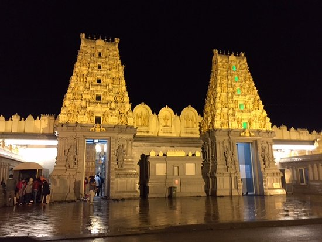
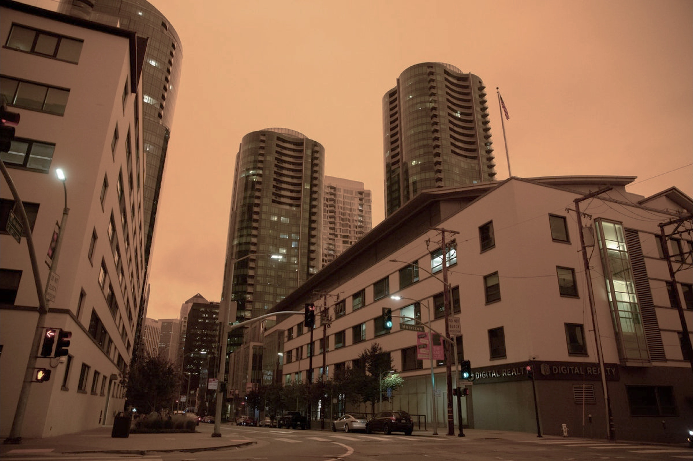

Cross-Scene Illumination Transfer
GenWildSplat can transfer lighting or appearance from one scene to another, enabling controlled appearance changes while preserving geometry. Such appearance transfer is not feasible with prior methods like WildGaussians and NexusSplats, which couple appearance and geometry optimization.


